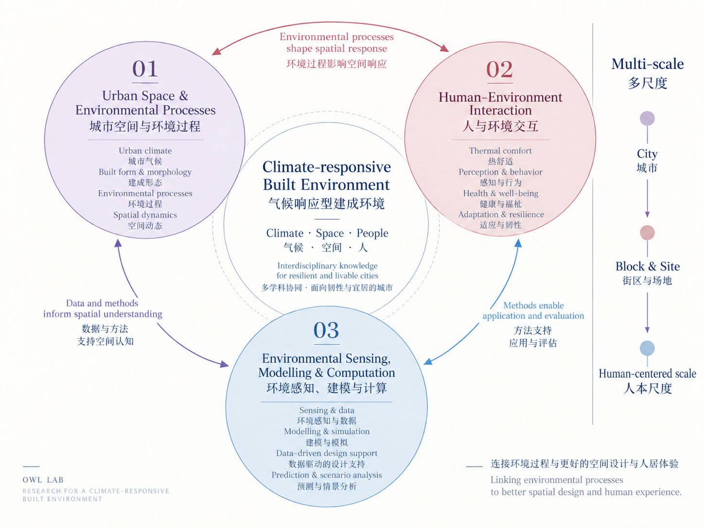

Research
Research
从空间出发，追踪环境过程，连接人与环境，并将认识带回设计。
Framework
概念框架

1 + 3
研究线索
城市空间与环境过程
Urban Space & Environmental Processes
空间条件与空间干预如何产生环境效应？这些效应又如何随时间、尺度与气候条件发生变化？
人与环境交互
Human–Environment Interaction
环境条件如何转化为人的暴露、感知、行为与健康，并进一步影响空间设计？
环境感知、建模与计算
Environmental Sensing, Modelling & Computation
如何更准确、高效地感知、量化和模拟城市环境过程？
Funded
Funded Projects
Projects led by Owl Lab
面向适老步行的城市新区街道动态热暴露机制与空间优化研究——以夏热冬冷地区为例
面向夏热冬冷地区适老步行场景，研究城市新区街道中的动态热暴露机制，并探索支持街道空间优化的设计路径。
城市街区更新中精准增绿的热环境提升边界与空间配置方法研究
围绕城市街区更新中的精准增绿，研究热环境提升边界与空间配置方法，为更新中的增绿决策提供依据。
基于可解释人工智能（XAI）的城市蓝绿空间降温效应动态机制与优化研究
关注城市蓝绿空间降温效应的动态机制与优化问题，探索可解释人工智能支持下的空间配置研究路径。
面向热韧性提升的城市更新蓝绿空间智能布局及优化方法研究
面向热韧性提升，研究城市更新中蓝绿空间的智能布局与优化方法，为热韧性导向的空间更新提供支持。
Selected
Selected Publications
01 Urban Space & Environmental Processes
城市空间与环境过程
The cooling efficiency of variable greenery coverage ratios in different urban densities: A study in a subtropical climate.
Ouyang, W., Morakinyo, T. E., Ren, C., & Ng, E. Building and Environment, 174, 106772.
How to quantify the cooling effects of green infrastructure strategies from a spatio-temporal perspective: Experience from a parametric study.
Ouyang, W., Morakinyo, T. E., Lee, Y., Tan, Z., Ren, C., & Ng, E. Landscape and Urban Planning, 237, 104808.
The dual impacts of built environment on extreme heat and urban heat resilience: A comparative study in Beijing.
Liu, Q., Ouyang, W., Tan, Z., Mei, Y., & Bai, B. Urban Climate, 64, 102618.
02 Human–Environment Interaction
人与环境交互
Comparative evaluation of PET and mPET models for outdoor walking in hot-humid climates.
Ouyang, W., Tan, Z., Chen, Y.-C., & Ren, G. Building and Environment, 271, 112636.
The comparative thermal experience of young and old pedestrians in urban green spaces and in densely built areas.
Tan, Z., Christopoulos, G., Roberts, A. C., Ren, G., Ouyang, W., Lo, K., & Ho, C. Urban Forestry & Urban Greening, 105, 128712.
03 Environmental Sensing, Modelling & Computation
环境感知、建模与计算
Evaluating the thermal-radiative performance of ENVI-met model for green infrastructure typologies: Experience from a subtropical climate.
Ouyang, W., Sinsel, T., Simon, H., Morakinyo, T. E., Liu, H., & Ng, E. Building and Environment, 108427.
Comparing Different Recalibrated Methods for Estimating Mean Radiant Temperature in Outdoor Environment.
Ouyang, W., Liu, Z., Lau, K., Shi, Y., & Ng, E. Building and Environment, 109004.